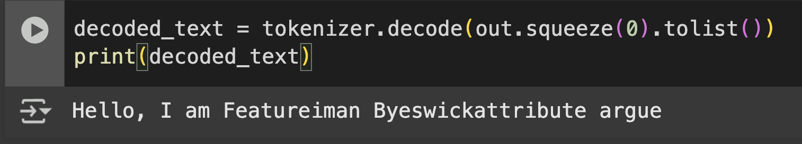

Generating Text
August 4, 2025

That picture is honestly enough to summarize what I did today. In addition, today is going to be a little shorter of a blog. I have to work on other things, unfortunately. Firstly, let's clarify an idea I had confusion on the other day. The output of the model we created is a matrix of probabilities, un-refined probabilities, that allude to the next token. I'll speak more about where exactly in the space the probabilities lie.
Starting off, recall the sliding window problem we faced in the very early phases of tokenization. We established a window of a certain size, now referred to as context size, and iterated it throughout tokens in a sequence. During each sliding window, our goal was to take the tokens inside the window as context and try to predict the token right outside the sliding window. Using our model, we can now produce the logits, apply softmax, and find the token with the highest probability to be next in the sequence. As you can see in the main picture, we had a sliding window focused on the text "Hello, I am". Obviously, we have not trained the model yet, so it doesn't know which token has the highest probability, so it's just saying random stuff. But at least it's producing information and that is the important part.
I wanted to dive a little deeper into the mathematics and clear up any confusion. I'm pretty sure that embeddings, as in positional and token embeddings don't happen until we are INSIDE the model. This confusion arrised because I incorrectly assumed the inputs to the model would be of size \(BS \times SL \times ED\), but it is actually of shape \(BS \times SL\). The latter shape is the form of un-embedded tokens, so this is what leads me to the almost certain assumption that embedding doesn't happen until inside the model. Once the shape of \(BS \times SL\) is passed into the text generation function, it is first split into the sliding window format with appropriate context lengths, by user design, of shape \(BS \times CL\). After this, it is passed into the model and produces a matrix of probabilites of shape \(BS \times SL \times VS \) where VS is Vocab Size. The reason for it being Vocab Size indexes long is because it has to list the probabilities of every single word it knows, so that it can pick the word with the highest probability. From this point on, we extract the last row of each batch, as in the last row of the matrixes of shape \(SL \times VS\). In the future, I'm guessing we would have to implement some simple function to find the max efficiently, since the vocabulary size is extremely wrong. When working on big projects like this, I see more of the value of leetcode and designing algorithms. Most naive approaches would be too expensive on giant structures like this.
Regardless, that is it for today. I'm doing some reflecting, and I believe re-implementing everything from scratch without documentation is honestly not the best way to spend my time. Sure, it makes me rely on the mathematics, but at the end of the day, the design of the Torch modules (as in their function, their needed arguments, etc...) are all very specific and difficult to remember. Even if I have the math and can understand what is happening, I still have to look back. A good understanding of the underlying theory however is completely vital to being able to know where to look. For example, if I didn't understnd the progression of shapes that happens durring text generation, I would totally not be able to understand that I needed to push in raw tokens into the model. Maybe the best way to continue is keeping a log of all the important functions and processes that I see from the books/papers, and then when I approach a simliar problem where it be in this project or another project, I can have the intuition to know where to look.
Anyway, onto chapter 5!